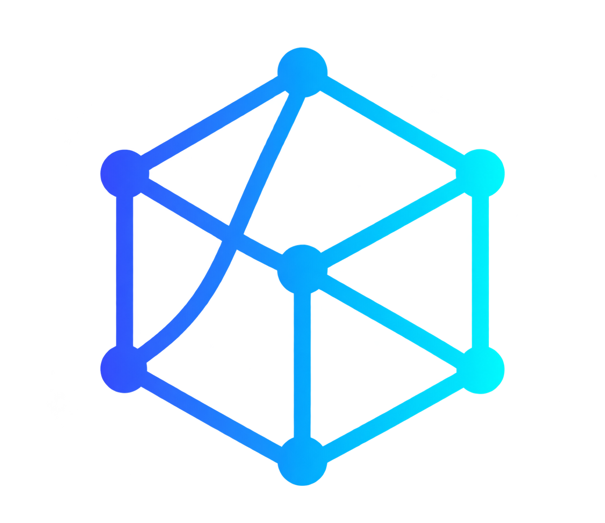

2025 até o momento
Analista de Dados
Telebit Brasil
Integração de fontes, tratamento de dados, modelagem fato/dimensão, KPIs e dashboards executivos e operacionais.
ETL · Power BI · SQL · APIs
Gabriel ClementinoData & BIAnalista de Dados & BI · Brasil
Há mais de 9 anos, transformo informação dispersa em visualizações que revelam o próximo movimento, com método, contexto e atenção ao detalhe.
Do negócio aos dados
Antes de construir dashboards, eu aprendi a entender como as decisões acontecem. Minha trajetória começou em gestão e análise de negócios e evoluiu para dados, ETL, automação e BI.
Ver currículo completo ↓Telebit Brasil
Integração de fontes, tratamento de dados, modelagem fato/dimensão, KPIs e dashboards executivos e operacionais.
ETL · Power BI · SQL · APIsV.tal
Scripts em Python, análises preditivas, definição de KPIs e construção de dashboards para suporte a iniciativas estratégicas.
Python · Power BI · ExcelData Mundo
Mapeamento de dados, ETL, prototipação, dashboards e indicadores para conectar problemas de negócio a decisões.
Pentaho · SSIS · SQL · TableauMG Telecom
Análise de mercado, identificação de oportunidades e acompanhamento de indicadores para crescimento e expansão.
KPIs · Excel · EstratégiaMinasTrade · Incorporações Clementino
Orçamentos, projeções, processos, fornecedores, custos e desempenho. Essa base de negócio orienta meu trabalho com dados hoje.
Gestão · Processos · IndicadoresConecto análise, design e contexto de negócio para construir ferramentas que as pessoas realmente conseguem usar.
Dashboards que aproximam o indicador da decisão, com hierarquia visual e leitura rápida.
↗Estruturas confiáveis com Star Schema, tabelas fato e dimensão, calendário e transformação.
↗Uma camada editorial sobre os dados para transformar números em narrativa e contexto.
↗Uma seleção de dashboards e análises construídos para responder perguntas reais de negócio, com acesso direto às versões publicadas em Power BI.
Dashboard desenvolvido para oferecer uma visão abrangente da operação, avaliando desempenho, eficiência e experiência do cliente.
Leitura de clientes, produtos, territórios, revendedores e evolução mensal para orientar a performance comercial.
Análise de capacitação com foco em conclusão, avaliações e horas de treinamento por colaborador.
Dashboard para receita, ticket médio, lifetime value, clientes ativos e churn por negócio, região e produto.
Cada projeto começa pela pergunta certa e termina com uma ferramenta que ajuda alguém a agir.
Mapear o contexto, a pergunta de negócio e as pessoas que vão usar a informação.
Organizar fontes, transformar dados e criar uma modelagem que sustente a leitura.
Construir uma visualização com hierarquia, fluidez e espaço para o insight aparecer.
Testar, ouvir e ajustar até a ferramenta ficar tão clara quanto a decisão que apoia.
Me conte o que você está tentando enxergar. A próxima boa decisão pode começar por uma conversa pelo WhatsApp ou pelo LinkedIn.